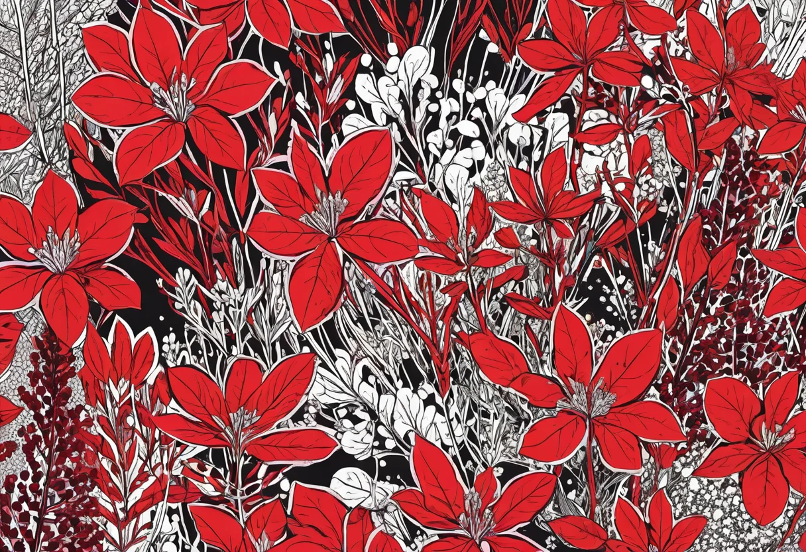

Rote Aquarienpflanzen – Arten, Pflege und Düngung
Rote Aquarienpflanzen sind die Königsklasse der Unterwasservegetation. Mit ihren intensiven Farbtönen von zartem Rosarot bis zu tiefem Purpur setzen sie spektakuläre Akzente in jedem Aquarium. Sie sind die Blickfänger, die ein gutes Aquascape von einem außergewöhnlichen unterscheiden. Doch die leuchtende Rotfärbung ist kein Selbstläufer – sie ist das Ergebnis einer perfekten Abstimmung von Licht, CO₂ und Nährstoffen. In diesem Guide erfährst du, welche roten Pflanzen es gibt, wie du ihre intensive Färbung förderst und welche Pflege sie benötigen.
Die Rotfärbung von Aquarienpflanzen entsteht durch die Einlagerung von Anthocyanen und Carotinoiden – Farbpigmente, die die Pflanze vor zu intensiver Lichteinstrahlung schützen und gleichzeitig die Photosynthese optimieren. Anders als oft vermutet, ist Rot also nicht nur ein optischer Bonus, sondern eine physiologische Anpassung. Pflanzen produzieren diese Pigmente vor allem dann, wenn sie hohen Lichtintensitäten ausgesetzt sind und gleichzeitig genügend Nährstoffe zur Verfügung haben. Fehlen Licht oder Nährstoffe, bleiben auch rote Pflanzen grün.
Die schönsten roten Aquarienpflanzen im Porträt
Rotala macrandra – Die Königin der roten Pflanzen
Rotala macrandra ist der Star unter den roten Aquarienpflanzen. Sie bildet große, runde Blätter mit einer intensiven Rotfärbung, die von hellrosa bis zu tiefem Rubinrot reicht. Die Pflanze stammt aus Indien und gehört zu den anspruchsvollsten Aquarienpflanzen überhaupt. Sie braucht starkes Licht (mindestens 1 Watt pro Liter bei LED), eine stabile, kräftige CO₂-Versorgung und eine ausgewogene Nährstoffdüngung mit besonderem Fokus auf Eisen. Bei Nährstoffmangel werden die Blätter blass, durchsichtig oder löchrig. Rotala macrandra wächst relativ langsam und sollte regelmäßig zurückgeschnitten werden, um kompakt zu bleiben. Sie eignet sich als Blickfang im Mittel- oder Hintergrund und entfaltet ihre volle Wirkung in einer Gruppe von mehreren Stängeln.
Ludwigia repens – Der robuste Klassiker
Ludwigia repens ist eine der dankbarsten roten Aquarienpflanzen. Sie ist deutlich pflegeleichter als Rotala macrandra und auch für Einsteiger mit CO₂-Anlage gut geeignet. Die Blätter sind oval und färben sich unter gutem Licht von olivgrün über orange bis zu sattem Rotbraun. Die Pflanze wächst schnell und verzweigt sich bei regelmäßigem Rückschnitt buschig. Ludwigia repens kommt mit mittlerem Licht und moderater CO₂-Düngung aus – die Rotfärbung ist dann allerdings weniger intensiv als bei High-Tech-Bedingungen. Sie eignet sich hervorragend für den Hintergrund oder die Seitenbereiche des Aquariums.
Alternanthera reineckii – Das leuchtende Blutblatt
Alternanthera reineckii ist eine der farbintensivsten roten Aquarienpflanzen. Ihre Blätter leuchten in einem kräftigen Purpurrot bis Pink, das sich deutlich von allen grünen Pflanzen abhebt. Es gibt verschiedene Varianten, darunter Alternanthera reineckii 'Mini' für den Vordergrund und die größere 'Roseafolia' für den Mittelgrund. Alternanthera braucht viel Eisen und Spurenelemente, sonst werden die unteren Blätter blass und fallen ab. Die Pflanze wächst aufrecht und sollte regelmäßig geköpft werden, um die Verzweigung anzuregen. Die abgeschnittenen Köpfe können als Stecklinge neu eingepflanzt werden.
Lobelia cardinalis – Rotblättrige Kardinalslobelie
Lobelia cardinalis ist eine vielseitige Pflanze, die sowohl emers (über Wasser) als auch submers (unter Wasser) kultiviert werden kann. Unter Wasser bildet sie hellgrüne bis rötliche Blätter, die unterseits oft kräftig rot gefärbt sind. Die Pflanze bleibt kompakt und eignet sich gut für den Mittelgrund. Sie braucht mittelstarkes Licht und profitiert von einer guten CO₂-Versorgung. Bei der emersen Kultur über Wasser entwickelt Lobelia cardinalis übrigens wunderschöne rote Blüten – daher der deutsche Name Kardinalslobelie.
Proserpinaca palustris – Die Sumpffeder
Proserpinaca palustris, auch als Sumpffeder bekannt, ist eine besondere rote Pflanze mit fein gezackten, farnartigen Blättern. Ihre Farbe variiert von Orangegelb bis zu intensivem Kupferrot. Die Blattform ändert sich je nach Lichtbedingungen: Bei viel Licht sind die Blätter fein zerteilt und intensiv rot, bei wenig Licht eher ganzrandig und grün. Diese Anpassungsfähigkeit macht Proserpinaca zu einer faszinierenden Pflanze für Aquascaper, die mit Licht und Farbe experimentieren möchten.
Der Schlüssel zur perfekten Rotfärbung: Licht
Das wichtigste Element für die Rotfärbung ist das Licht. Rote Pflanzen brauchen eine hohe Lichtintensität – mindestens 0,8 bis 1,2 Watt pro Liter bei LED-Beleuchtung. Die Lichtfarbe spielt ebenfalls eine Rolle: Ein Vollspektrum mit einem hohen Anteil an Rot- und Blaulicht fördert die Farbstoffproduktion. Reine Warmweiß-LEDs mit niedrigem Blaulichtanteil sind für rote Pflanzen oft nicht ausreichend. Achte beim Kauf deiner Beleuchtung auf einen hohen PAR-Wert (Photosynthetically Active Radiation) und eine Farbtemperatur von mindestens 6.500 Kelvin.
Die Beleuchtungsdauer sollte sieben bis neun Stunden betragen. Längere Beleuchtung führt nicht zu mehr Rotfärbung, sondern begünstigt Algen. Ein häufiger Fehler ist, die Lichtintensität zu hoch zu drehen, ohne CO₂ und Düngung anzupassen. Dann entsteht eine Nährstofflücke, die Pflanze wird gestresst und verliert ihre Farbe – oder wird von Algen überwuchert. Licht und CO₂ müssen immer im Gleichgewicht sein.
Eisen und Spurenelemente – die Farbtreiber
Eisen ist der wichtigste Mikronährstoff für rote Aquarienpflanzen. Es ist an der Bildung von Chlorophyll beteiligt und aktiviert die Enzyme, die für die Anthocyan-Produktion verantwortlich sind. Ein Eisenmangel zeigt sich zuerst an den jungen Blättern: Sie werden blassgelb oder weißlich, während die Blattadern grün bleiben. Bei rotblättrigen Pflanzen verblasst die Rotfärbung und macht einem fahlen Grün Platz. Die ideale Eisenkonzentration liegt bei 0,05 bis 0,2 mg/l. Dünge Eisen am besten täglich oder jeden zweiten Tag in kleinen Mengen, da es schnell aus dem Wasser ausfällt und von Pflanzen aufgenommen wird.
Neben Eisen brauchen rote Pflanzen auch ausreichend Makronährstoffe (NPK). Ein häufiger Irrglaube ist, dass rote Pflanzen weniger Stickstoff brauchen – das Gegenteil ist der Fall. Ohne ausreichend Nitrat (10–20 mg/l) können die Pflanzen keine neuen Blätter bilden, und die Rotfärbung bleibt aus. Auch Phosphat (0,1–1 mg/l) und Kalium (5–15 mg/l) müssen regelmäßig nachgedüngt werden. Ein Volldünger mit NPK und Spurenelementen plus eine separate Eisendüngung ist die ideale Kombination.
CO₂ – der Turbo für Farbe und Wuchs
Ohne eine stabile CO₂-Versorgung werden die meisten roten Pflanzen nicht die gewünschte Intensität erreichen. CO₂ ist der Motor der Photosynthese – je mehr CO₂ zur Verfügung steht, desto mehr Licht und Nährstoffe kann die Pflanze verwerten. Ohne CO₂ bleibt die Photosyntheseleistung begrenzt, die Pflanze wächst langsam, und die Farbpigmente werden nicht in vollem Umfang produziert.
Eine Druckgas-CO₂-Anlage mit Magnetventil ist für rote Pflanzen die einzig sinnvolle Lösung. Bio-CO₂ ist zu unregelmäßig. Die Zielkonzentration liegt bei 20 bis 30 mg/l, kontrolliert durch einen zuverlässigen Dauertest. Rote Pflanzen profitieren zudem von einer konstanten Strömung, die CO₂ und Nährstoffe gleichmäßig im Becken verteilt. Positioniere den Diffusor so, dass die Strömung an den roten Pflanzen vorbeistreicht.
Die intensivste Rotfärbung entsteht nicht durch maximale Einzelfaktoren, sondern durch das perfekte Zusammenspiel von Licht, CO₂, Eisen und Makronährstoffen. Fehlt nur ein Faktor, bleiben die Pflanzen blass.
Rückschnitt und Vermehrung
Rote Stängelpflanzen müssen regelmäßig geschnitten werden, um kompakt und buschig zu bleiben. Schneide die Triebe auf etwa die Hälfte oder ein Drittel zurück, wenn sie die gewünschte Höhe überschritten haben. Die abgeschnittenen Spitzen können als Stecklinge neu eingepflanzt werden. Entferne die unteren Blätter des Stecklings und setze ihn etwa 2 bis 3 Zentimeter tief in den Bodengrund. Nach ein bis zwei Wochen bilden sich neue Wurzeln.
Aufsitzerpflanzen wie Bucephalandra mit roten Blättern (z. B. Bucephalandra 'Red') werden durch Teilung des Rhizoms vermehrt. Schneide das Rhizom mit einer scharfen Schere in Stücke mit je 3 bis 4 Blättern und binde sie auf Wurzeln oder Steine fest. Nach einigen Wochen haben sich die Teilstücke festgesetzt und wachsen weiter. Wichtig ist, dass das Rhizom nicht eingegraben wird, da es sonst fault.
Typische Probleme und ihre Lösungen
- Rote Pflanzen werden grün: Meist ein Zeichen für zu wenig Licht. Erhöhe die Lichtintensität oder die Beleuchtungsdauer. Prüfe auch, ob sich andere Pflanzen oder Dekoration über den roten Pflanzen befinden und sie beschatten.
- Blätter werden durchsichtig/löchrig: Kaliummangel. Dünge einen kaliumbetonten Dünger zu. Auch Eisenmangel kann ähnliche Symptome verursachen.
- Untere Blätter fallen ab: Meist zu wenig Licht in den unteren Bereichen oder Nährstoffmangel. Schneide die Pflanze zurück, damit mehr Licht an die unteren Blätter kommt.
- Algen auf roten Pflanzen: Punktalgen deuten auf ein Phosphat-Ungleichgewicht hin, Fadenalgen auf CO₂-Instabilität. Prüfe Düngung und CO₂-Versorgung.
- Pflanze wächst extrem langsam: CO₂-Mangel oder zu wenig Makronährstoffe. Erhöhe CO₂-Zufuhr und prüfe Nitrat- und Phosphatwerte.
Die richtige Platzierung im Aquarium
Rote Pflanzen entfalten ihre größte Wirkung, wenn sie strategisch platziert werden. Ein klassischer Trick des Aquascapings ist der Farbschwerpunkt: Setze eine Gruppe roter Pflanzen an einem Punkt des Beckens, der den Blick auf sich zieht – zum Beispiel im goldenen Schnitt oder an einem Ende des Beckens. Kontrastiere rote Pflanzen mit hellgrünen und dunkelgrünen Pflanzen, um die Farbwirkung zu verstärken. Ein Hintergrund aus zartgrünen Pflanzen wie Limnophila sessiliflora oder Rotala rotundifolia 'Green' lässt rote Akzente besonders leuchten.
Größere rote Pflanzen wie Rotala macrandra gehören in den Mittel- oder Hintergrund. Mittelgroße Arten wie Alternanthera reineckii 'Mini' oder Ludwigia repens setzen im mittleren Bereich Akzente. Kleine, rotblättrige Bodendecker gibt es kaum, aber einige Varianten von Bucephalandra haben rötliche Blätter und eignen sich für den Vordergrund, wenn sie auf Steinen oder Wurzeln aufgebunden werden.
🛒 Dünger und Technik für rote Pflanzen
Eine gute Versorgung mit Eisen, NPK und CO₂ ist der Schlüssel zur leuchtenden Rotfärbung. Diese Produkte empfehle ich:
Fazit – Rot ist eine Frage der Hingabe
Rote Aquarienpflanzen sind die Königsdisziplin der Aquarienpflanzenpflege. Sie fordern mehr Licht, mehr CO₂ und eine präzisere Düngung als grüne Pflanzen. Aber sie belohnen den Aufwand mit einer Farbintensität, die jedes Aquarium zu einem echten Hingucker macht. Wer bereit ist, in eine gute LED-Beleuchtung, eine CO₂-Anlage und eine durchdachte Düngung zu investieren, wird mit Pflanzen belohnt, die wie leuchtende Juwelen im Aquarium strahlen. Starte mit robusteren Arten wie Ludwigia repens oder Alternanthera reineckii und taste dich dann an die anspruchsvolleren Rotala-Arten heran.
Mehr zur allgemeinen Pflanzendüngung findest du in unserem Aquarium Düngung Guide. Und wenn du dich für die Gestaltung deines Aquariums inspirieren lassen möchtest, schau in unseren Aquascaping-Ratgeber.